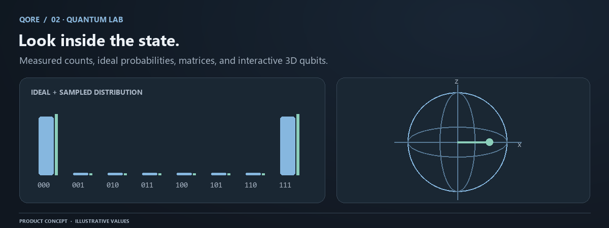

Quantum Lab: simulation and evidence
Quantum Lab turns a supported circuit into inspectable numerical evidence. It connects the source and settings to Qiskit Aer, then presents measured counts, empirical probabilities
Conceptual workflow. Numerical evidence and save status come from your actual QORE session.
Quantum Lab turns a supported circuit into inspectable numerical evidence. It connects the source and settings to Qiskit Aer, then presents measured counts, empirical probabilities, an ideal reference, state views, metrics, and execution metadata. Each view answers a different question; the Lab keeps their provenance attached rather than treating every visual as a hardware measurement.

From source to execution
The active source is parsed into QORE-IR and checked against the circuit allowlist and resource bounds. If a pure unitary circuit has no measurements, QORE adds an execution-only q[i] → c[i] measurement map for shot sampling; it does not modify the saved source. When measurements are written explicitly, they must form the terminal suffix and no unitary operation may follow them. Dynamic measurement-controlled programs are outside this runtime.
The API admits a bounded number of jobs, runs the worker, and records the result as a historical run. A source hash identifies the exact submitted text. Editing source clears live results while the prior run remains available through the Ledger. The console and output panel refer to attached results, not an invented running shell session.
Choose settings with purpose
Shots determine the number of sampled measurements. Use enough shots to make the expected effect visible, but do not assume that more shots compensate for a wrong circuit or incorrect bit mapping. The supported range is 1–100,000. Seed controls simulator and compilation randomness under the same compatible implementation; it is not a guarantee of identical output after every software update.
The API accepts statevector, matrix_product_state, or stabilizer. These methods have different compatibility and performance characteristics. Stabilizer simulation is appropriate for compatible Clifford circuits and can reject gates outside that family. Statevector is a straightforward starting point for the small circuits supported by QORE. Matrix product state performance depends on circuit structure, not just qubit count.
Noise and readout-error settings configure simulator models. They do not import a real device's current calibration. Inspect the returned backend label, method, and noise flags to see what was used. A model setting is part of the experiment and belongs in any comparison you preserve.
Counts and probabilities
counts is a map from displayed classical bitstrings to nonnegative shot counts. Their sum must equal the requested shots. probabilities divides each count by shots and includes zero-probability outcomes in the returned empirical distribution. An absent observed key does not establish that an event is mathematically impossible.
theoretical_probabilities is calculated from the ideal noiseless premeasurement state using the same qubit-to-classical mapping. This reference remains ideal even when sampled output uses noise. Keep the reference and sample distinct when explaining a divergence.
For a GHZ circuit, the ideal distribution is one half on 000 and 111. Finite counts will fluctuate. With readout error, other strings can occur. Neither effect means the bitstring convention changed. Read measurement before interpreting a nontrivial mapping.
Total variation distance
The Lab reports TVD = 0.5 * sum(abs(p_sample(s) - p_ideal(s))). Zero means the two distributions in that comparison match exactly. Values approach one as their probability mass separates. TVD here combines finite sampling fluctuation with any modeled-noise difference; it is not a direct measure of quantum-state fidelity.
At low shots, a moderate TVD can arise from sampling alone. Compare repeated seeds or increase shots before attributing every difference to a circuit bug. At high shots, a persistently different distribution may indicate noise, source, mapping, or implementation differences. Read the surrounding metadata before drawing a conclusion.
State views and their limits
Statevector amplitudes describe ideal coherent evolution from the initial all-zero register. Their squared magnitudes determine ideal basis probabilities. Relative phase can matter for later interference even when it does not change the current basis histogram. Display values are rounded for reading.
Bloch vectors are calculated from each qubit's reduced density matrix. Entanglement can make a local state mixed, with a vector inside the sphere. The global register can remain pure. These ideal local-state and amplitude displays are limited to six qubits; larger supported runs can still provide sampled output.
The unitary matrix is available up to four qubits. It describes the unitary prefix on every computational-basis input and excludes measurement. A four-qubit circuit has a 16-by-16 operator, so the matrix view needs space and scrolling. The display cap is lower than the six-qubit verification cap because human-readable rendering and numerical validation are different operations.
Metadata and bit ordering
Execution metadata belongs below the primary output so you can inspect the scientific result at full width. It records backend, shots, seed, noise configuration, duration, timestamps, and versions. Duration is an observed execution measurement, not a service-level promise.
Displayed bitstrings read the highest classical index on the left and c[0] on the right. The mapping can differ from qubit index order. Unmeasured classical bits are zero. For q[0] -> c[1] and q[1] -> c[0], the left character describes qubit zero's measured destination. Always use the recorded mapping rather than guessing from circuit-wire positions.
Metrics and circuit inspection
Gate count excludes measurements and barriers. Two-qubit gate count counts instructions acting on exactly two qubits. A three-qubit gate counts as one unitary instruction before decomposition. Depth follows the circuit-depth convention with measurements included and barriers excluded. A change in basis can alter gate count without implying a proportional speedup on hardware.
The circuit diagram and generated QASM provide additional ways to inspect what was compiled. QORE-IR is the shared semantic representation used by these views. Compare that representation and the source hash when diagnosing an unexpected result.
A reliable experiment loop
Predict a small circuit analytically. Fix the source, shots, seed, method, and noise settings. Run and check totals. Compare ideal reference, sampled counts, local state, and mapping. Save the evidence before varying one parameter. This approach makes a chart explainable and a discrepancy diagnosable.
If a job is busy, retry after the active jobs finish. If it times out, reduce complexity and review host resources. If a state view is absent, check its display limit. If the output differs from expectation, first inspect source identity and mapping, then noise and method. See noise and sampling for a deeper statistical treatment.